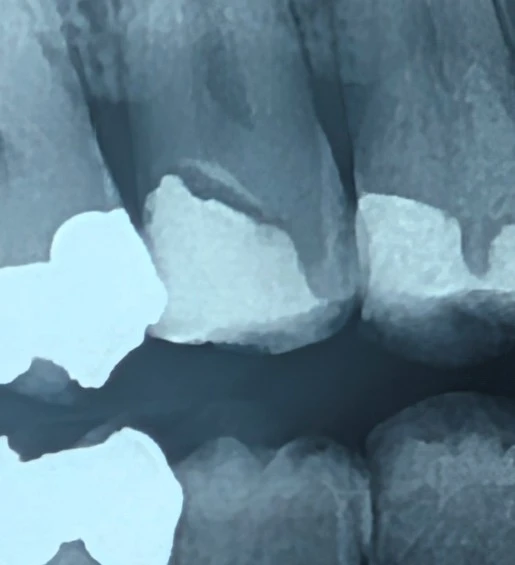

نسخه استخراجشده؛ ترجمه یا تأیید علمی انجام نشده است. وضعیت: captured
در بایتوینگ، زیر یک ترمیم ناحیهای رادیولوسنت دیده میشود. ذهن بلافاصله به سمت پوسیدگی ثانویه میرود. آیا این تیرگی یعنی باید ترمیم را برداشت؟

گاهی زیر ترمیم ناحیهای رادیولوسنت با مرزهای مشخص دیده میشود که منشأ آن پوسیدگی نیست، بلکه به مواد ترمیمی مربوط است. این وضعیت معمولاً وقتی دیده میشود که:
وقتی رادیولوسنسی مرزهای صاف و منظم دارد، ضخامتش یکنواخت است، موازی با کف حفره دیده میشود و بهصورت محدود زیر ترمیم باقی میماند، احتمال پوسیدگی ثانویه کم میشود و تفسیر به سمت لاینر یا کامپوزیتهای رادیولوسنت میرود.
الگوی یکنواخت و مهندسیشده، رفتار بیولوژیک پوسیدگی را تقلید نمیکند.
شناخت این الگو جلوی درمانهای غیرضروری، برداشتن ترمیم سالم و مداخلات تهاجمی بیمورد را میگیرد. همهی رادیولوسنسیهای مجاور ترمیم نشانهی پوسیدگی نیستند؛ گاهی نظم هندسی تصویر تو را از «تشخیص بر پایهی ترس» به تفسیر مبتنی بر شناخت مواد میبرد. تشخیص صحیح اینجا به همان اندازهی درمان صحیح اهمیت دارد.
در پیوند دیابت و سلامت دهان، ذهن اغلب سراغ پریودنتیت میرود؛ دربارهی خود پوسیدگی ماجرا ظریفتر است. در یک متاآنالیز که از میان نزدیک به دو هزار مقاله ۲۸ مطالعه را کنار هم گذاشت، شاخص DMFT (شمارش دندانهای پوسیده، کشیدهشده و پرشده) در مبتلایان به دیابت نوع ۲ بهطور معناداری بالاتر بود.
ارتباط دیابت و پوسیدگی واقعی و قابلاعتماد است، اما غیرمستقیم و از مسیر واسطهها؛ اثبات رابطهی علّی قطعی مطالعهی دیگری میخواهد.
نوع سؤال: ساخت کلمه · 4 خانه
حروف منبع: ز · ا · ب · ق